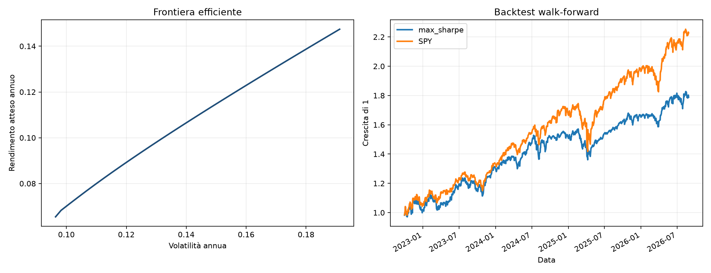

Portfolio analytics · Risk engineering · 2026
Portfolio Optimizer
& Risk Analysis
A configurable application that moves from raw stock and ETF prices to auditable risk metrics, constrained portfolio weights and walk-forward evidence.
View repository- Role
- Creator & developer
- Stack
- Python · Tkinter · CLI
- Methods
- Optimization · Risk · Backtest
- Assets
- Stocks & ETFs

The problem
Optimization is only useful when the surrounding pipeline is trustworthy.
A portfolio weight vector is the final step of a longer analytical chain. Prices need to be sourced, normalized and aligned; risk estimates need controls; constraints must be explicit; and the strategy must be tested using only information available before each rebalance.
The approach
Keep data, analytics and decisions replaceable.
The application separates provider adapters from the analytical engine. Users choose the stock and ETF universe, benchmark, data source and optimization settings, then receive a reproducible package containing cleaned data, diagnostics, portfolio weights, charts, backtest history and a manifest.
Analytical pipeline
Four stages from prices to evidence
- 01
Acquire
Use Yahoo Finance, Twelve Data, Alpha Vantage or a custom REST/CSV source behind the same provider interface and incremental cache.
- 02
Diagnose
Calculate CAGR, volatility, Sharpe, Sortino, Calmar, beta, VaR, CVaR and maximum drawdown on aligned return histories.
- 03
Construct
Compare equal weight, minimum variance, maximum Sharpe and risk parity with shrinkage covariance, long-only constraints and maximum weights.
- 04
Validate
Run a walk-forward backtest with configurable lookback, rebalancing and turnover costs, keeping each estimate strictly prior to its decision date.
Two interfaces
Guided when exploring, repeatable when automating.
The desktop interface exposes the complete workflow without hard-coded tickers. The CLI uses the same pipeline for scheduled or reproducible runs.
python cli.py \
--symbols SPY,QQQ,IWM,AGG \
--benchmark SPY \
--provider yahoo